LOOM-8 manual
LOOM-8 turns the M-VAVE FM-1 into a pocket groovebox: eight threads of sound on a 64-step loom. You get eight tracks with nine engines (six synths, a sample player, a break slicer and a drum kit), a 64-step sequencer with fourteen step tricks and parameter locks, players, twelve throws (momentary effects) per octave, a conductor that moves the song through a progression, two send effects (the reverb includes the PlayStation's own reverbs among its modes), a mixer, a master section, thirty-two scenes and a song. You can weave two patterns into a third: bar by bar, step by step, or with one pattern's rhythm and the other's pitch.
LOOM-8 is built for one loop: write a short pattern, add a few tricks, weave it with another, let the conductor play a progression, season it with throws while it plays, then put the scenes in order.
To see it played first, watch the LOOM-8 video.
- Quick start
- Cheat sheet
- Getting around
- Steps
- Recording
- Sounds
- Players
- Arrange, scenes and the song
- The aux tracks
- Mix and master
- Saving
- Page by page
- Screen reader
Quick start
This takes you from a blank project to a jam in ten minutes. White keys are numbered 1 to 16 from the left, and black keys 1 to 11.
- A beat. Turn ALGORITHM until the tag line says T1 kit. Press SEQ. Black key 1 is the kick: press it, then white keys 1, 5, 9 and 13. Press black key 2 for the snare and press white keys 5 and 13. Press black key 3 for the hat and press every other white key. Press PLAY.

The beat playing - A bass line. Turn ALGORITHM to T2, the bass. On the Steps page, hold SEQ and play a low note. While SEQ is down, the keys play like a keyboard, and LOOM-8 remembers the note. Let go and press white keys 1, 4, 7 and 11. Hold SEQ, play another note, let go and press white key 14. Or tap REC and play the notes one after another: each one goes on the next step. Press EDIT and turn KNOB 1 while it plays to hear the shape change.
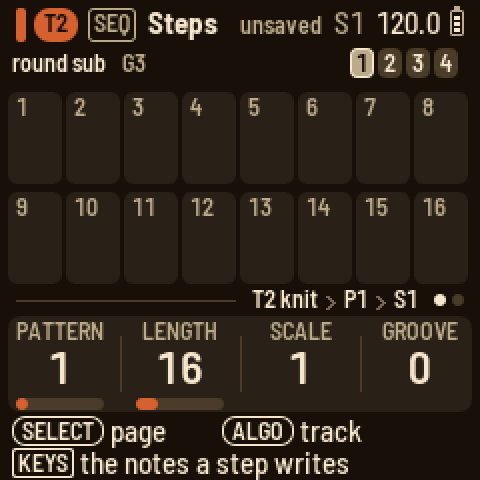
SEQ held on Steps 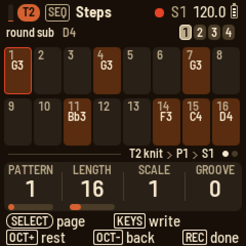
Step record - Tricks. Still on T2's Steps page, hold white key 7 and press ARP. Turn KNOB 1 to multiply and KNOB 2 to 3 for three hits. Let go. Hold white key 14, press ARP, turn KNOB 1 to jump and KNOB 2 to "either": the pattern starts to wander. Hold white key 1, press ARP and turn KNOB 1 to skip trig, so step 1 plays every other pass.
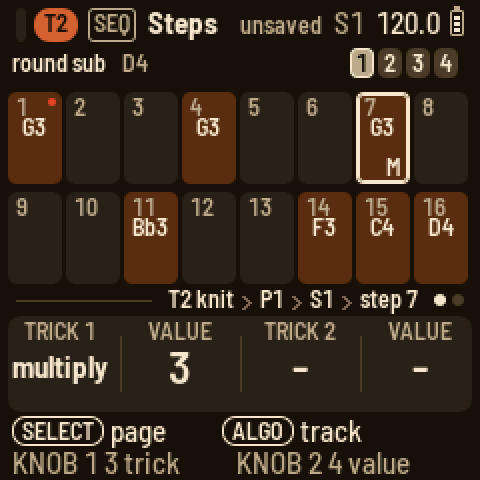
A trick on step 7 - A chord track. Turn ALGORITHM to T3. Press EDIT and turn PRESETS until a pad you like comes up. Press SEQ, hold SEQ and hold three keys together, then let go and press white key 1. Hold white key 1 and press white key 8 so the chord lasts half the bar; a bar under the cells shows how far it reaches. Hold SEQ and three keys a little higher, let go and press white key 9. The cells name the chords.
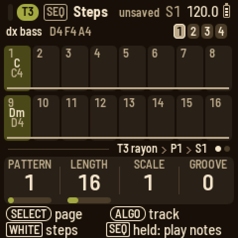
Two chords - The conductor. Turn ALGORITHM to COND (the conductor). Press EDIT: the key is C major, and every melodic track follows it. While it plays, play an F, then a G, then a C: everything moves with you, in the scale. Press SEQ, turn SELECT to the Bar page and press black key 4 so that a step is a beat. Back on Steps, hold SEQ and play a chord, let go and press a step, and so on: four steps make one bar of the progression. Or let T3's chords lead: press EDIT, turn SELECT to Follow and press black key 3.
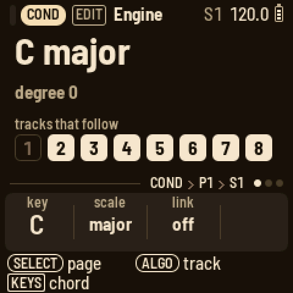
The conductor 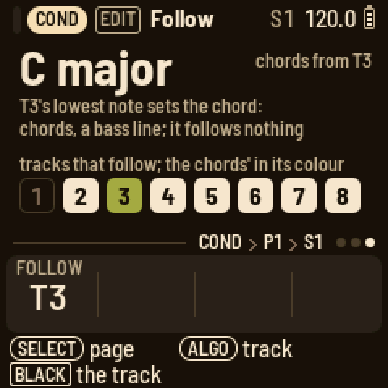
Chords from a track - Throws. Press FX and turn SELECT to its last page, Throws. Hold a low key: F3 mutes the drums, G3 stutters them, A3 repeats, B3 echoes, C4 builds, D4 plays four on the floor and E4 jumbles them. A high key does the same to the melodic tracks. Let go and the pattern comes back.
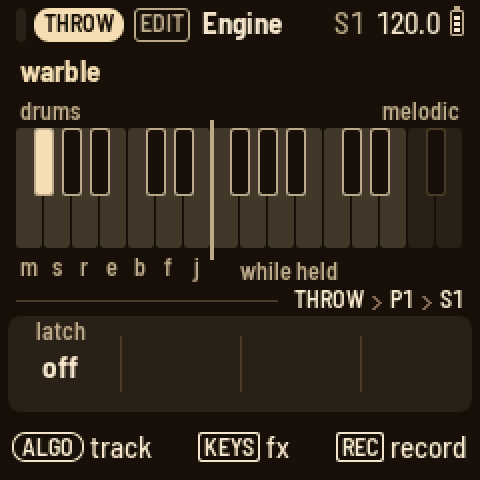
Throws - A scene. Press HOME. White key 1 is the scene that is playing. Press white key 2 to make a copy. Now change something: mute the drums with black key 1 on Arrange, or go to T2's Steps and turn KNOB 1 to P2 for a new pattern. Press white keys 1 and 2 in turn. While it plays, each scene waits for the next bar; press its key again to switch at once.

Arrange - Save. Press SAVE.
Where to go from here: hold a step to see its velocity, length, chance and pitch. Hold a step and press EDIT to lock a knob on it. Press ARP on T2 and turn KNOB 1 to arp. Press GLO, turn SELECT to Master out and turn KNOB 4 (the pump) while it plays. Hold any button for a second and a card explains it.
Cheat sheet
The words
- Track (T1 to T8): one sound and its patterns. After T8 come the aux tracks: COND (the conductor), THROW (the throws), FX I and FX II.
- Pattern (P1 to P8): a track's steps, up to 64 of them in four bars. Each track has eight patterns.
- Step: one cell of a pattern. It holds up to four notes (on a drum track, any of the eleven sounds), two tricks, a chance and parameter locks.
- Trick: something a step does as it plays, such as pulse, hold, multiply or jump. There are fourteen. Hold a step and press ARP to give it two.
- Lock: a knob value that a step sets as it plays.
- Scene (S1 to S32): which pattern each track plays, plus the mutes (a kit's individual sounds too) and the conductor's key.
- Song: a chain of scenes, each played for a number of bars.
- Engine: the way a track makes its sound. There are six synths (knit, rayon, jacquard, bellows, cane and voile), two sample engines (sample and slice) and the kit, a drum synth.
- Preset: a sound to load. 85 come with LOOM-8, from seven to eighteen for each engine, and 16 are your own.
- Player: what the keys do on a track: arp, strum or hold.
- Conductor: the aux track that moves the other tracks through a key and scale, either from its own chords or from a track's notes.
- Throw: a momentary effect on the drums or the melodic tracks, played from a key on FX's Throws page.
- Weave: one track's pattern crossed live with another: bars or steps taking turns, or one pattern's rhythm with the other's pitch. You set it up on the track's ARP pages and play it on the WEAVE track.
- Groove: a timing and velocity feel. The project picks the type, and each track sets how much it gets.
- Pump: the mix (everything but the drums) ducks on each kick and swells back (set on Master out). A track's pump LFO does the same to that one track.
How do I…
White keys are numbered from the left, 1 to 16, and black keys the same way, 1 to 11. "Hold HOME and press…" means keep HOME down while you press the next thing.
hold press turn keys
| How do I… | Do this |
|---|---|
| pick a track | Turn ALGORITHM on any page. |
| write a beat | Press SEQ. On a drum track, black key 1 is the kick: press it, then white keys 1, 5, 9 and 13. Black key 2 is the snare. |
| write a note | On Steps, hold SEQ and play the note. Let go and press a white key: the note goes on that step. |
| write a chord | On Steps, hold SEQ and hold the notes together. Let go and press a step. |
| pick a drum sound | On a drum track's Steps page, press its black key, or hold SEQ and press any key. |
| see a step | On Steps, hold its white key. The knobs show its velocity, length, chance and pitch. |
| make a note longer | Hold its step and press a later white key. A bar under the cells shows how far a note reaches. |
| nudge a step | Hold its step and press OCT− or OCT+. |
| copy and paste | On Steps, press SEL and pick COPY PATTERN or COPY BAR. Where you want it, pick PASTE PATTERN or PASTE BAR (PASTE LOCKS ONLY pastes just the locks). For one step, hold it, press SEL and pick COPY STEP; then hold another step, press SEL and pick PASTE STEP. |
| make a pattern twice as long | On Steps, press SEL and pick DOUBLE PATTERN. The pattern plays itself twice, so you can vary the second half. |
| change a step's note | Hold its step and turn KNOB 4. This works on a drum step too: its hits play higher or lower. |
| put a second sound on a drum step | Hold the step and press the sound's black key. |
| take one note off a step | Hold the step, press SEL, pick the note and press SEL. |
| change a step's chord | Hold the step and tap SEQ, then play the chord (you can let go of the step). Tap SEQ again when you're done. |
| add a trick | Hold the step and press ARP. KNOB 1 picks the first trick (pulse, hold, multiply, velocity, ramp up, ramp down, random, glide, bend, tonality, jump, skip lock, skip trick, skip trigger) and KNOB 2 sets its value. KNOB 3 and KNOB 4 do the same for the second trick. Turn a trick back to "-" to remove it. |
| set a skip's pattern | Keep turning its value past "random". The same cycles come round again, first as "not on the last pass", then as "only the first". |
| give a step a chance | Hold the step and turn KNOB 3. Past 99 %, the A:B cycles come next. |
| lock a knob on a step | Hold the step, press EDIT, ENV, FX or LFO, and turn a knob. To clear a lock, hold SEL and turn that knob. The step's SEL list also has CLEAR LOCKS. |
| clear a knob's automation | Hold SEL and turn the knob. This clears its motion and locks in the pattern (or, with steps held, only theirs). |
| see the next bar | Press OCT+ on Steps. (While SEQ is held, OCT sets the keys' octave and PRESETS the track's sound, so you can try notes before you write them.) |
| play one bar of a long pattern, or jump about in it | Press SEQ and turn SELECT to the Bar page. Hold SEQ and press black key 1 to 4 to jump to that bar. Hold two of them to loop those bars, or tap one twice to loop that bar. |
| set the track scale | On Steps, turn KNOB 3. Or, on the Bar page of a synth track, press a black key: 1, 2, 3, 4, 5, 6, 8, 16 sixteenths a step, or black key 9 for half a sixteenth. |
| change the pattern | On Steps, turn KNOB 1. While it plays, the new pattern comes in at the next bar line. Until then, the knob reads NEXT 1>2 and the tag line says "next P2". |
| weave two patterns | On the track, press ARP and go to its last page, Weave. Press a black key for the track to weave in and a white key for its pattern; KNOB 3 sets the rule. From then on, it plays woven. To bring it in by hand instead, set KNOB 4 to "on WEAVE", then pick the WEAVE track with ALGORITHM and hold that track's white key. |
| change the sound | Press EDIT and turn PRESETS to step through the engine's own sounds. A name like "BASS 3/11" tells you what the sound is for and where you are in the list. SEL changes the engine. |
| edit a drum sound | On a drum track, press EDIT and press the sound's black key. The knobs are the model's own four. Turn SELECT for the model, random, pan and volume. Its SEL list has the play mode. |
| shape one drum | On a drum track, press ENV and press the drum's black key to get its own attack, hold, decay and lag. Turn SELECT for its filter: PRESETS picks low-pass, high-pass or band-pass, and the knobs set cutoff, resonance, envelope and drive. |
| play a sample | On a drum track, set a key's model to sample. On a synth track, press SEL and set ENGINE to sample. The sample knob picks the sample. |
| load my own samples | Open <https://charlesvestal.github.io/fm1-loom/samples/> in Chrome or Edge with the FM-1 connected by USB. Add, replace, rename, reorder or remove samples, then press Send. They come after the factory samples, as user 1, user 2 ... |
| get the breaks back (0.7 on) | On the samples page, press Add the breaks, then Send. |
| chop a break | On a synth track, press SEL and set ENGINE to slice. Each key plays one slice of the break, with F3 playing the first. Write them on the steps in any order. To load your own break, run tools/loom_samples.py load "amen.wav@2" (here, a loop of 2 bars). |
| change the filter | Press ENV and turn SELECT to Filter. PRESETS changes the filter type. |
| give a sound some character | Press FX for the Character page. PRESETS changes the type (drive, fold, crush, ring, tilt, tape, sampler), and the knobs set its amount, tone and mix. |
| use the effects | Press FX and turn SELECT to Sends, the track's sends. Keep turning to reach FX I and FX II, where PRESETS picks the effect. |
| play | Press PLAY: every track starts from step 1. |
| record live | Hold REC and press PLAY. Recording starts from step 1 straight away (after the count-in, if you set one). |
| record while playing | While it plays, hold REC and play: it records for as long as you hold REC. Hold REC and press PLAY to keep recording on. |
| record a knob's motion | While it plays, on a sound page, hold REC and turn the knob. The motion is recorded for as long as you hold REC. |
| set the click, count-in, quantise | While stopped, hold REC and turn the knobs: CLICK, COUNT, QUANT and MODE (overdub or replace). |
| record step by step | While stopped, on Steps, tap REC. The red cursor starts after the last note. Each key (or chord) you play is written there, and the cursor moves on. OCT+ leaves a rest and OCT− goes back. Tap REC again to finish. |
| undo | Hold HOME and press REC. Hold HOME and press PLAY to redo. |
| set the tempo | Press HOME and turn KNOB 1. Hold HOME while you turn it for tenths. On any page, you can also hold HOME and turn SELECT. |
| use a throw | Press FX and turn SELECT to Throws. Hold a key: the lower octave works on the drums and the upper octave on the melodic tracks. Hold REC while it plays to record throws into the THROW track. |
| make a new scene | Press HOME and press an empty white key. It becomes a copy of the scene that is playing. OCT+ puts scenes 17 to 32 on the white keys. |
| switch scenes while playing | On Arrange, press the scene's white key, and it starts at the next bar. Press it again to switch at once. To wait for the end of T1's pattern instead, set SCENES SWITCH in the SEL list to "pattern end". |
| mute a track | On Arrange or Mix, press its black key. On Mix, hold it to solo the track for as long as you hold it. |
| mute one drum sound in a scene | On Arrange, hold the kit track's black key and press white keys 1 to 11. |
| make the whole mix pump with the kick | Press GLO, turn SELECT to Master out and turn KNOB 4 (pump). SEL picks what drives it and how fast it swells back. |
| solo a track | On Mix, hold its black key (hold several to solo them together). Let go and the mutes come back. |
| sweep a few tracks together | Press GLO and turn SELECT to LFO, the shared LFO. The black keys pick the tracks, and KNOB 4 picks what it moves. |
| play a progression | Turn ALGORITHM to COND (the conductor). Press EDIT and play a chord: it moves the tracks that follow. Press SEQ and press a step to put the chord on it. Set the scale to 4 on the Bar page so that a step is a beat. |
| let a track lead the chords | On COND, press EDIT and turn SELECT to Follow. Press the track's black key, and its lowest note sets the chord for the others (use a chord part or a bass line). Press the same key again to turn it off. |
| get new sounds for the band | Press HOME, press SEL and pick RANDOMIZE PRESETS: T2 to T8 each get a random preset for their part. Press SEL for yes. |
| save | LOOM-8 saves by itself when it is stopped and quiet. SAVE saves at once. Hold SAVE and press white key 1 to 3 to save to that slot. |
| keep a sound | On a sound page, hold SAVE and press a white key. The sound becomes that user preset. |
| load a project | Press HOME and press SEL. On LOAD PROJECT, turn ALGORITHM to pick the slot, then press SEL. NEW PROJECT starts an empty project in a free slot, with its sounds picked at random (new ones, as RANDOMIZE PRESETS gives). |
The buttons
| Control | What it does |
|---|---|
| PLAY | Starts and stops. Every track starts from step 1. If you change a track's scale or length, it stays in phase with the rest. On the Song page, it plays the song from the selected slot. With REC held, it starts live recording. |
| REC | While playing, hold it to record for as long as you hold it. While stopped, tap it to arm step record. Hold it while playing on a sound page to record the knobs you turn. Hold it while stopped (or on Steps) and the knobs become the record settings (click, count-in, quantise, mode). |
| SEL | Opens a list of this page's settings and actions. With a step held, it lists the step's notes. When LOOM-8 asks a question, SEL means yes. |
| HOME | Opens Arrange. On Arrange, it opens the Song page. Hold it as a shift key for buttons and knobs: undo and redo, fine tempo, and the scenes on PRESETS. When LOOM-8 asks a question, HOME means no. |
| SEQ | Opens Steps; page 2 is Bar. Hold it on Steps and the keys play the track and set what a step writes (OCT sets their octave, PRESETS the track's sound). Hold it on Bar and black keys 1 to 4 jump to a bar or loop bars. |
| EDIT | Opens Engine. Page 2 is Play and page 3 is Play 2 (the octave). The knit and rayon engines have a page 4, Sub, with the engine's second set of knobs. A sample track in a loop mode has its Loop page second. On a drum track, page 2 holds the key's model, random, pan and volume, and page 3 its sends. On the conductor, the pages are its key, the routing and Follow. |
| ENV | Opens Envelope (on a drum track: lag, attack, random, length), then Filter, then the filter's envelope. |
| FX | Opens Character, the track's own effect. Next come Sends, the track's sends to FX I and FX II, and then FX I and FX II, the two effects. |
| LFO | Opens LFO. Page 2 has the type's fourth and fifth knobs. |
| ARP | Opens Players. With the arp, page 2 has its second set of knobs and page 3 is hold. |
| GLO | Opens Mix. Turn SELECT for Master EQ, Master color, Master out, LFO (the shared LFO) and Setup. |
| SAVE | Saves. Hold it and press a white key to save to a slot, or to keep a sound. |
| OCT− / OCT+ | Move the keys an octave. On Steps, they show the bar before or after (with SEQ held, they set the keys' octave), and with a step held, they nudge it. In step record, they move the cursor. On Arrange and Song, they put scenes 1 to 16 or 17 to 32 on the white keys. |
| SELECT | Turns to a button's next page. In a list, it moves up and down. |
| ALGORITHM | Picks the track. In a list, it changes the row's value. |
| PRESETS | Steps to the next item of whatever the page shows: a preset, a drum key, an effect, a pattern, a drum sound, a scene. |
| KNOB 1–4 | Set the four values at the bottom of the screen. |
Hold any button for a second, and a card explains it. The two lines at the bottom of the screen always say what each control does on the page you're on.
Getting around
The screen
From top to bottom, the screen has five parts.
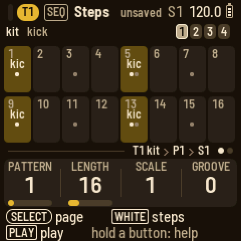
- The header shows the page's button and name, then the tempo with the battery beside it. The battery turns red when it is low and shows a bolt while a computer powers the FM-1. A red dot appears while you record, and "unsaved" when the project has unsaved changes. On a track's pages, the track's pill comes first, with a small meter before it that shows what the track is playing right now, so you can tell its notes from the other tracks'. Messages and questions cover the header for a moment.
- The middle is the page itself.
- The tag line says where you are: the track and its engine, the pattern and the scene, such as "T3 knit › P2 › S1". The dots on the right show which of the button's pages you're on.
- The knob strip shows the names and values of the four knobs, each with a bar in the track's colour. The knob you just turned shows in the text colour.
- The two bottom lines say what the encoders and the keys do here.
The screen comes in three themes, which you pick with Setup's THEME knob: tape deck, warm brown-black with cream text; blueprint, deep blue with white lines; and b/w, black with white text and red. In every theme, each instrument track has its own colour. In tape deck they are T1 mustard, T2 rust, T3 olive, T4 teal, T5 blue, T6 plum, T7 tan and T8 sage. Steps with notes show in the track's colour, dimmed. Whatever is sounding right now shows in the track's colour at full brightness: the step playing, the scene playing, a meter. On Arrange and Mix every track keeps its colour, so you can tell them apart at a glance. Cream (or white) outlines show what you are touching: the held step, the cursor, the knob you turned. Red is used only for recording and for locks.
Messages
Short messages cover the header for a moment. i is news, ✓ means something is done, an arrow is an undo or redo, ? on red is a question waiting for you to press SEL or HOME, and ! means LOOM-8 couldn't do something and tells you why.
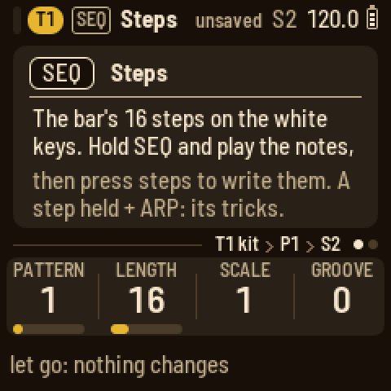
The tracks
Turn ALGORITHM to pick a track: T1 to T8, then COND (the conductor), THROW (the throws) and WEAVE. On Mix, it steps through the mixer strips instead: T1 to T8, then FX I and FX II, the effect returns. On the Engine, Play, Envelope, Filter, LFO and Players pages, the keys play the track you picked. On a drum track, the black keys are the eleven drum keys, and the white keys play them too. On FX I and FX II, the keys play the instrument track you picked last, so you can hear the effect.
The lights
PLAY is green while playing and red while recording. REC lights while recording or armed. SAVE lights when there is something to save. The current page's button is lit. On Steps, the steps with notes glow and the step playing is bright. On Arrange, the scenes in use glow and the one playing is bright. On Arrange and Mix, a track's black key is lit while the track plays: bright for the selected track, and dark while it is muted. With Setup's LIGHTS on, the other buttons glow too.
Steps
Press SEQ. The main band shows one bar of the pattern as 16 cells, and the 16 white keys are those cells. The top line shows what a key press writes: on a drum track, the sound shown; on a synth track, the remembered notes, which are the last keys you held together on a play page; on the THROW track, the last effect you played. The four squares on the right are the bars. OCT− and OCT+ show the previous or next bar.
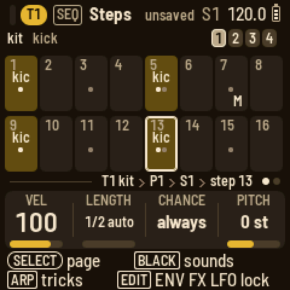
- Hold SEQ and play keys to choose what a step writes. The keys play the track, and the keys you hold together become the remembered notes (a chord). On a drum track, the key you play becomes the sound shown. While SEQ is down, OCT− and OCT+ shift the keys' octave, and on a synth track PRESETS steps through the track's sounds, so you can try the notes before you write them. When you let go of SEQ, nothing else changes.
- Tap a white key to put the remembered notes on that step, or to clear the step.
- Hold a white key to see the step. If you hold it longer than a tap, the step stays as it is. KNOB 1 sets its velocity; on a drum track this is the velocity of the sound shown, since each sound on a step has its own, and the black keys pick the sound. KNOB 2 sets its length in steps. KNOB 3 sets its chance: always, a percentage, then the A:B cycles, which play on the A-th of every B passes. KNOB 4 sets its pitch. On a synth track its notes move by semitones, a chord all together. On a drum track the step's hits play up to 24 semitones from their key's pitch. This is the step's own note, separate from the key's pitch knob and its locks. OCT− and OCT+ nudge the step earlier or later.
- Hold a step and press a later white key to stretch its note to that step. KNOB 2 takes it further, up to the pattern's whole length: in quarter steps up to 16 steps, then in whole steps. A note held past the end of the pattern wraps around to the start. The bar under the cells shows how far the note reaches, with an arrow where it carries on into another bar or comes in from one.
- Hold a step and press a black key on a drum track to put that sound on the step, or take it off.
- Hold a step and press SEL for a list of its notes. Pick one and press SEL to remove it. The list also has COPY STEP. Then hold another step (or several), and its list has PASTE STEP, which pastes the notes and locks, and PASTE LOCKS ONLY, which pastes just the locks onto the notes already there.
- Hold a step and press ARP for its tricks (below).
- Hold a step and tap SEQ to play its chord in (on a melodic track). The screen shows the keys with the step's notes lit. The keys you play together become the step's notes, replacing what it held; its length, tricks and locks stay. You can let go of the step: it stays in this mode until you tap SEQ again. Meanwhile, OCT− and OCT+ move the keys' octave.
Tricks
Hold a step and press ARP. The knob strip shows the step's two tricks: KNOB 1 picks the first trick and KNOB 2 sets its value, and KNOB 3 and KNOB 4 do the same for the second. Turn a trick back to "-" to remove it. If you hold several steps, each turn changes them all the same way. Let go of the steps when you are done.
| # | Trick | Values: 1 to 9, then random |
|---|---|---|
| 1 | pulse: plays the step again on the next steps | 1 to 9 times |
| 2 | hold: keeps the note over the next steps | 1 to 9 steps |
| 3 | multiply: retriggers the step | 1 to 9 hits |
| 4 | velocity | 4, 8, 16, 32, 64, 100, 112, 127, 0 |
| 5 | ramp up: the note climbs the scale each pass | 2 to 6 steps over one octave, then over three |
| 6 | ramp down | the same |
| 7 | random: a different note of the scale each pass | the same |
| 8 | glide: slides into the note | 10 % to 80 %, then off |
| 9 | bend | down-up, up-down, bumps, springs, fades, random 1 and 2 |
| 10 | tonality: how the step follows the conductor | ignore, transpose only, octave up, fifth up, third up, chromatic up, chromatic down, quantize 33 %, 66 %, 100 % |
| 11 | jump: moves the playhead | to step 1, 5, 9, 13, forward, back, either, stay, align |
| 12 | skip lock: the locks play every Nth pass | a cycle of 1 to 9 |
| 13 | skip trick: the other trick plays every Nth pass | a cycle of 1 to 9 |
| 14 | skip trigger: the step plays every Nth pass | a cycle of 1 to 9 |
For the three skips, the value continues past random: the same cycles come round again, first playing every pass but the last, then playing only the first. A new trick starts at its default: pulse and hold 4, multiply 2, velocity 64, the ramps and random 4, glide 40 %, bend down-up, tonality fifth up, jump forward, and the skips a cycle of 2.
Pulse and hold keep time. The playhead keeps moving, the steps they cover give way to them, and the track carries on where it would have been. On a drum track, only the sounds on the trick's step give way. The other sounds play their steps as written, so a pulsed kick does not stop the hats.
A step's chance and its skip trigger decide whether the step happens at all. When it doesn't, its tricks don't happen either, and that includes a jump: a jump with a 25 % chance jumps about one time in four. A jump back, or stay, starts a new pass, so the A:B cycles, the skips and the ramps keep counting inside the loop it makes.
A cell shows its note, two notes one above the other, or the first note and how many more there are ("+2"). A chord shows its name with its bass note underneath. If the name is too long for the cell, it is shortened (CM7 for maj7, C+ for aug, Co for dim, Cs2 and Cs4 for the sus chords). If it is still too long (C#M7, Ebm7), the root goes above its quality. An effect on the throw track shows three letters (PAN) above its group (drm or mel). On a drum track, every sound on the step has a tick, and the tick of the sound shown is bright, so you can see the whole beat while you edit one sound. A bar along the bottom of the cells shows how far a long note reaches; an arrow at the end of the bar means it carries on. The tricks' letters sit at the bottom right, a percent sign marks a chance, and a red dot marks locks.
Locks
Hold a step and press EDIT, ENV, FX or LFO. The knob strip becomes that module's four knobs for the held step. Turn SELECT for the module's other pages: ENV has the envelope, the filter and the filter envelope, and FX has the character and the sends. A knob shows "–" when the step has no lock on it, and locked values show in red. Turn a knob to lock its value on the step, and let go of the step to go back. A lock lasts until the next step that plays without one; that step plays the knob's own value again.
To clear locks, hold SEL and turn a knob. This clears that knob's locks on the held steps, or, with no step held, its motion and locks in the whole pattern. The held step's SEL list has CLEAR LOCKS, which clears all of its locks (a drum step's pitch stays). While recording, any knob you turn writes locks on the steps as they play. The Bar page's SHAPE knob turns a track's locks into a line: each lock holds until the next one and moves toward it.
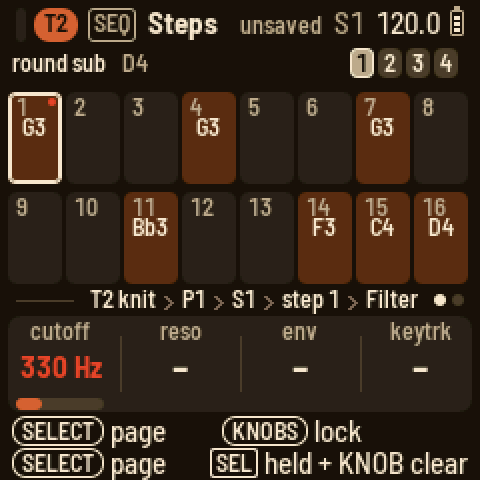
The Steps knobs and the Bar page
With no step held, KNOB 1 picks the pattern (P1 to P8), KNOB 2 sets the length in steps, KNOB 3 the track scale (how many sixteenths a step takes, from 1/2 to 16) and KNOB 4 the track's groove amount.
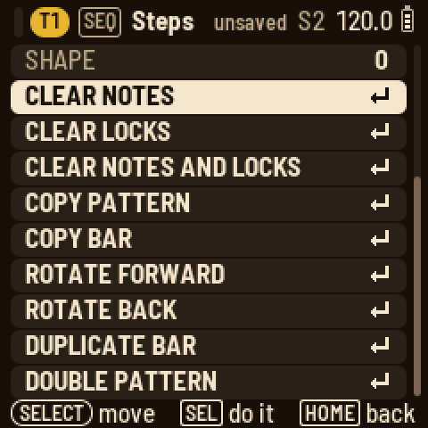
Turn SELECT for the Bar page. Its knobs are quantise for live recording, the note length of new steps (as a percentage of a step), the groove amount and the shape. The keys write steps just as on Steps: hold a step for its knobs, tricks and locks, and on a kit the black keys pick and place its sounds. The box of the bar the keys write to is outlined, and OCT- and OCT+ move it. On a synth track, the black keys set the track scale: black keys 1 to 8 give 1, 2, 3, 4, 5, 6, 8 and 16 sixteenths a step, and black key 9 gives half a sixteenth.
Press SEL on either page for the actions:
- clear notes, clear locks, or clear both
- copy the pattern or the bar shown
- paste it, or only its locks. A bar pastes onto the bar shown. The copy is read when you paste, and a kit's steps paste only onto a kit.
- rotate it a step forward or back
- duplicate the bar into the next one
- double the pattern: it becomes twice as long and plays itself twice, locks included. A 16-step pattern becomes 32, so you can vary its second half.
On the Bar page, hold SEQ and press black keys 1 to 4, which stand for the pattern's bars. Press one key to jump to that bar at the next bar line and play on from there; any loop you had is released. Hold two keys to loop that range of bars, or tap one key twice to loop that bar. The loop is saved with the pattern, per track and per pattern. Only the loop plays, so a bar you are editing comes round straight away. A bar under the boxes marks the loop, and a small bracket marks a jump waiting for its bar line. Arrange draws the loop bright inside the pattern's line, with the playhead repeating inside it. While stopped, the keys set the loop immediately. (On the other pages, holding SEQ still picks the notes a step writes.)
Weave
A weave crosses what a track plays with another pattern, live, while the song plays. Nothing is written. You set up a weave on a track, and from then on that track plays woven (the other track plays as it was). Or you can keep the weave for the WEAVE track and bring it in by hand.
Set it up. On a track, press ARP and turn SELECT to the last page, Weave. Press a black key to choose the track to weave in: 1 to 8 are the tracks, 9 is COND and 10 is THROW, and pressing the same key again sets none. Then press a white key, 1 to 8, to choose its pattern. KNOB 1 (WITH: the track), KNOB 2 (PATTERN: its pattern) and KNOB 3 (RULE) set the same things. The page spells it out in words ("T2 weaves with T1", "by rhythm: T2 P1's rhythm, T1 P1's pitch") and draws a bar three ways: the track's own steps, the other pattern's steps, and what plays, with each step in the colour of the pattern it comes from. If a pattern is longer than a bar, OCT+ and OCT− go through its bars ("bar 2 of 4"). The last line says whether the weave plays (on), or which WEAVE track key brings it in. The rules:
| Rule | What the track plays |
|---|---|
| bars | its own bars and the other pattern's in turn: its bar, the other's bar ... |
| steps | its own steps and the other's in turn |
| rhythm | its own rhythm, playing the other pattern's pitches in order, round and round |
| pitch | the other pattern's rhythm, playing this track's pitches |
Each pattern loops at its own length, and the turns count from the start, so a one-bar pattern woven by bars plays its own bar, then the other's. A track can weave with any track. A drum track's sounds become notes on a melodic track (a ladder from C3: the kick C3, the snare Eb3, the hat F3 ...), and a melody's notes become a kit's sounds. The throw track weaves only with throws. The conductor weaves too: one progression with another.
When it plays. KNOB 4 on the Weave page, PLAYS, sets when the weave plays: always (as soon as it is set up; the default) or on WEAVE, only while the WEAVE track's key for that track is on (held, latched, or on its steps).
Play it. For a weave set to PLAYS on WEAVE, turn ALGORITHM to WEAVE. White keys 1 to 10 are T1 to T8, COND and THROW. Hold one and that track weaves for as long as you hold it; the key lights, and so does its box on the screen. KNOB 1, latch, makes one tap start a weave and the next tap stop it. Hold REC while it plays and the weaves you play are written onto the WEAVE track, each starting at the step where it began and lasting as long as it lasted. The song then plays them back.
The WEAVE track's steps. On SEQ, its steps show the tracks they weave and, underneath, for how long. Tap a step to put the tracks you last wove on it, and tap it again to clear it. Hold a step and press black keys 1 to 10 to choose its tracks, and a later white key to set its end. KNOB 1 picks its pattern (each scene keeps its own), and KNOB 2 sets its length (16 to 64 sixteenths; with a step held, the step's length). SEL clears the pattern.
Keep it. The SEL list on the Weave page has KEEP AS PATTERN, which writes the weave into the track's first empty pattern so you can edit it like any other. Weaving a pattern with a shifted copy of itself (copy it, ROTATE FORWARD, then weave it by steps) makes variations. A drum pattern's rhythm with a melody's notes makes a riff.

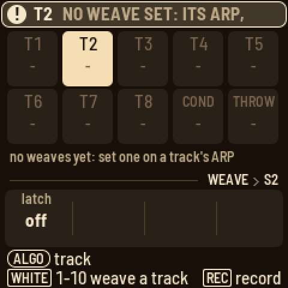
Recording
- Live recording: hold REC and press PLAY. Every track starts from step 1, and recording starts at once (after the count-in, if you set one). The keys write steps as you play, quantised by QUANT, and chords land together on one step. Press PLAY to stop.
- While playing: hold REC and play. It records only while you hold REC. Hold REC and press PLAY to keep it on; press REC again to turn it off.
- Motion: while recording, any knob you turn on a sound page (Engine, Envelope, Filter, Character, Sends, LFO ...) is written onto the steps as locks as they play. To punch it in, hold REC while it plays and turn the knob. It records while you hold REC, and the keys record too.
- Chords on the conductor: turn ALGORITHM to COND and record the same way. Each chord lands on the nearest step, and a new chord replaces the one that was there. Set the conductor's scale to 4 on the Bar page, so that a step is a beat.
- Record settings: while stopped (or on Steps and Bar), hold REC and turn the knobs: CLICK (off, while recording, on), COUNT (a count-in of off, 1 or 2 bars), QUANT (how far notes are pulled onto the steps) and MODE (overdub adds to the pattern; replace clears the steps the playhead passes as you record over them). Holding REC to turn them changes nothing else.
- Step by step: while stopped, tap REC. On Steps, the keys become a keyboard, and a red cursor marks the step they write, starting after the pattern's last note. Play a key, or several keys together, to write the step; the cursor moves on when you let go. OCT+ leaves a rest and OCT− goes back a step. On a drum track, the sound is added to the step. Tap REC again to stop. Step recording works on the sound pages too, with a strip of the bar along the bottom of the screen.
- Throws you hold while recording are written into the THROW track's pattern.
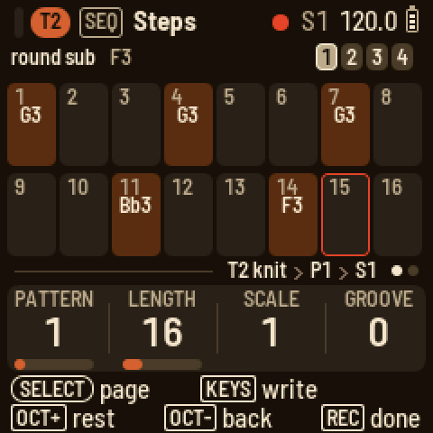
Hold HOME and press REC to undo the last change, and hold HOME and press PLAY to redo it. There is one level of undo, covering whatever changed last: a pattern with its locks (including CLEAR LOCKS), a track's sound (or T2 to T8 after RANDOMIZE PRESETS), the master, or the song, scenes and weaves.
Sounds
Press EDIT. The Engine page shows the track's engine and a picture of it that moves as you turn the knobs (and with their motion and locks as the track plays). Below are the four knobs, with values from 00 to 99. Turn PRESETS to step to the engine's next sound: first its factory presets, then any user presets you saved from it. The message tells you what the sound is for and where you are in the list, for example "PAD 3/11". The roles are bass, lead, keys, pluck, bell, stab, brass, strings, pad, voice, chord, fx, drum and loop; a user preset shows "PRESET". Each engine's presets start from its plain sound and run through basses, leads, keys, plucks and bells to pads. Most are dry. Pads, strings, voices and bells send to the reverb, and some plucks and leads send to the delay. Press SEL for the list:
- ENGINE changes the engine and loads its first sound; then you pick a preset.
- SCRAMBLE gives you a random sound.
- SAVE AS PRESET and RESET SOUND.
- FOLLOWS CONDUCTOR sets whether the track follows the conductor.
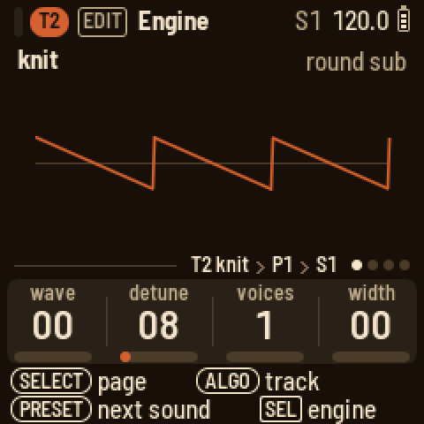
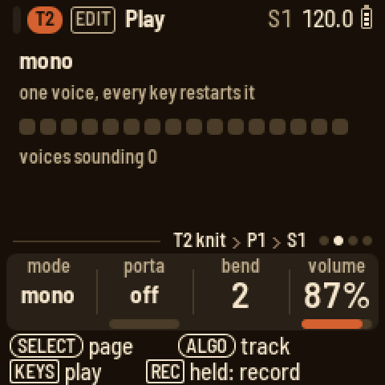
| Engine | Knobs | Presets |
|---|---|---|
| knit | wave, detune, voices, width | 11 |
| rayon | bright, ratio, edge, tine | 10 |
| jacquard | table, scan, bend, ripple | 11 |
| bellows | stops, pedal, rotor, rate | 9 |
| cane | model, timbre, color, damp | 8 |
| voile | model, timbre, color, breath | 7 |
| sample | sample, start, length, mode | 18 |
| slice | sample, slices, pitch, gate | 11 |
| kit | the model knobs of the key shown |
Knit and rayon have a second set of knobs. Press EDIT, then turn SELECT to the Sub page.
Knit
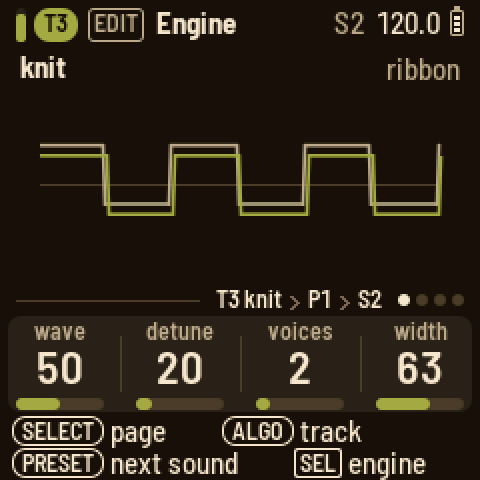
Knit is the everyday subtractive voice, for basses, brass, strings, stabs and pads. wave sweeps from a saw through a square to a narrow pulse (put an LFO on it for PWM). voices stacks one to seven copies of that wave in unison. detune spreads their pitches, finely at first and widely toward the end, and width spreads them across the stereo field. With a single voice, detune becomes a slow drift of the pitch instead.
On the Sub page, osc 2 adds one more copy of the wave, up to 24 semitones above or below the note, and level sets its level (0 turns it off). sub adds a sine an octave down, and noise adds noise. detune also tunes osc 2, up to 20 cents above its interval, whatever the number of voices. Set osc 2 to 0 semitones with a little detune for the classic sound of two oscillators beating. To tune osc 2 finely, hold HOME and turn KNOB 1 ("osc 2 fine"). This goes 50 cents either way and tunes osc 2 alone, without the drift or spread that detune brings.
A wide unison costs more than an ordinary voice, so knit plays at most six voices, or five when its unison is set to seven. A new note beyond that takes over the oldest one.
Rayon
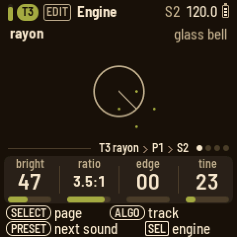
Rayon is two-operator FM in the DX style, for e-pianos, bells, mallets and basses. bright sets how much the modulator moves the carrier (a soft note gets less). ratio sets the modulator's pitch relative to the note. The left half of the knob gives a detuned 1:1 for slow beating. The right half gives ratios from 0.5:1 to 8:1, including the inharmonic ones that make bells. edge feeds the modulator back into itself, turning it from a sine toward a saw. tine adds a high partial that is struck with the note and dies away within a quarter of a second; how loud it is depends on how hard you play. This is an e-piano's bark.
On the Sub page, fall sets how fast the brightness falls from the start of the note (0 holds it), floor sets how much brightness is left, and keyscale makes high notes less bright.
Jacquard and bellows
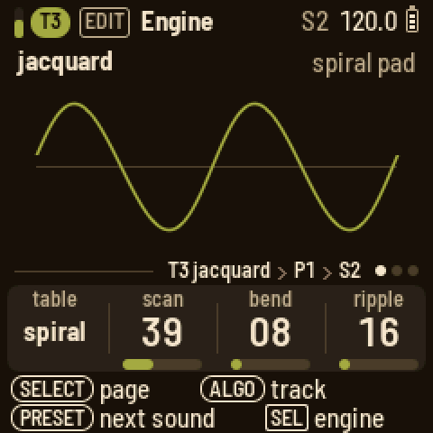
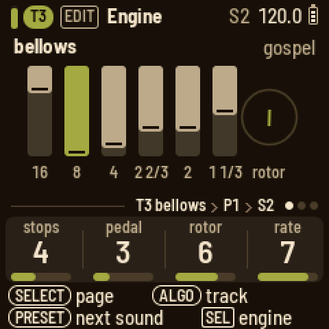
Jacquard plays wavetables. table picks one of nine: shapes, nasal, grit, vocal, spiral, fold, octaves, glass and chirp. scan moves through the table's frames, bend bends the shape of the wave, and ripple wobbles it with a second oscillator, slowly at first and up to the rate of the note itself.
Bellows is the organ, with six drawbars. Its four knobs go from 1 to 8. stops picks the registration: transistor, combo, jazz, gospel, rock, theatre, pipe or church. pedal adds the low 16' bar (1 is none). rotor sets how deeply the rotating speaker swirls (1 is none), and rate sets how fast it turns.
Cane and voile
These two engines come from Mutable Instruments' Braids, Émilie Gillet's macro oscillator. Each one is a family of Braids models. model picks one. timbre and color are Braids' own two knobs, and what they do depends on the model. The fourth knob is LOOM-8's own.
Cane is the physical models: instruments built from their parts, such as a string, a tube or a bell.
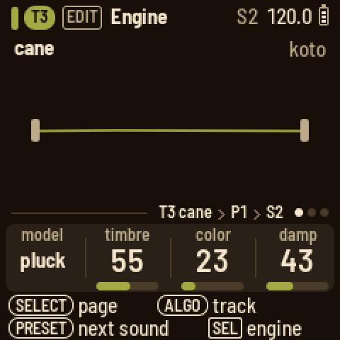
| Model | timbre | color |
|---|---|---|
| pluck | how long the string rings | how wide the pluck: hollow to full |
| bow | how hard the bow presses | where it crosses the string |
| reed | how steady the breath (less noise) | the tone of the body |
| flute | how breathy; high is clean | how hard it is blown |
| bell | how long it rings; at the top it never stops | how far apart the partials are pulled |
| drum | how long it rings | from tone to rattle |
damp darkens the sound: a softer pluck, a duller bridge or bore, and on the bell and the drum the upper partials die first. The pluck and the strikes play once on each note. The bow and the breath start again on each note, and in legato they carry on while the pitch moves. Cane plays at most four voices at once, because each voice keeps its own strings and tubes in memory. A new note beyond that takes over the oldest one. Very low notes that the bow or the flute cannot reach sound an octave up.
Voile is the voices.
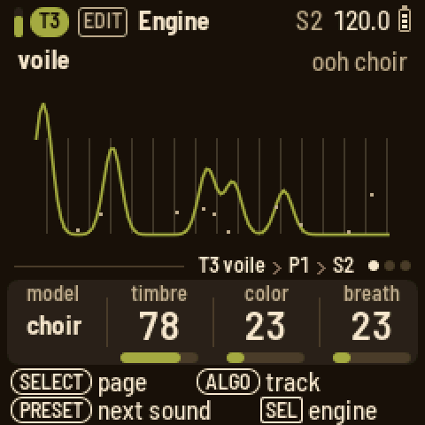
| Model | timbre | color |
|---|---|---|
| vosim | the first formant | the second formant |
| vowel | the vowel, through nine | shifts the formants |
| choir | the vowel: a, e, i, o, u | the singer: bass to soprano |
| whisper | how sharp the two peaks are | how far the second peak is from the note |
breath is the noise in the voice. On vosim and choir it is the air passing through. On vowel it is the consonant at the start of each note, from none to long. On whisper it is the balance of noise against a buzz; all the way up, you get a pure whisper.
Most of these models cost about as much as any other voice, or less. Cane's bell, with its eleven partials, costs about a third more.
Kit
A drum track has eleven keys, played on the black keys. Each key has a drum model: kick, snare, hat, clap, shaker, tambourine, string (a plucked string), conga, tom, fm or sample; one of the x models (x kick, x snare, x hat, x clap, x tom, x rim, x fm, x noise); sophie; or clang. The kit is tuned to C: kick G1, snare G3, low tom C3, high tom G3, conga C4, string C3, fm C5. To pick the key the knobs edit, press a black key or turn PRESETS. The four knobs on the Engine page belong to that key's model:
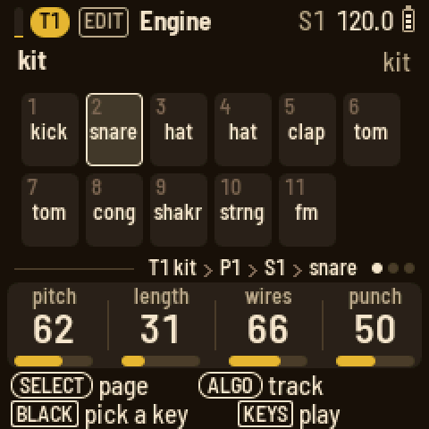
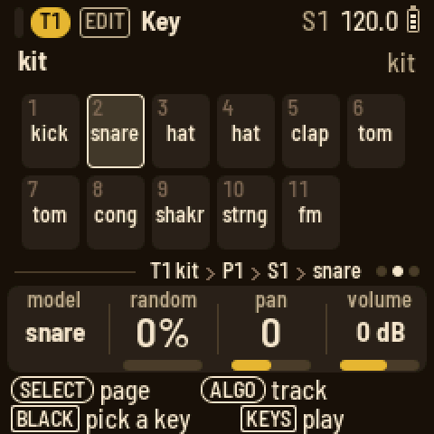
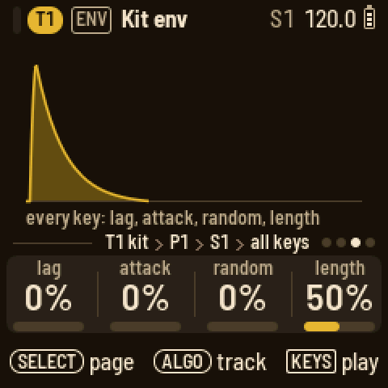
| Model | Knobs |
|---|---|
| kick | pitch, length, punch, tone |
| snare | pitch, length, wires, punch |
| hat | pitch, length, metal, focus |
| clap | tone, length, spread, tail |
| shaker | color, length, swell, return |
| tambourine | tone, length, jingle, hiss |
| string | pitch, length, bright, pluck |
| conga | pitch, length, slide, drive |
| tom | pitch, length, sweep, rate |
| fm | pitch, length, mod, feedback |
| sample | sample, pitch (24 semitones each way), start, reverse |
| x kick | pitch, length, tone, sweep · click, harm, drive |
| x snare | pitch, length, tone, snap · wire, body, drive |
| x hat | pitch, length, tone, res · noise, metal, drive |
| x clap | tone, length, drive |
| x tom | pitch, length, tone, sweep · noise, fm, drive |
| x rim | pitch, length, tone, sweep · noise, drive |
| x fm | pitch, length, ratio, mod decay · click, index, drive |
| x noise | tone, length, drive |
| sophie | pitch, length, color, metal · model, feedback, sweep, crush |
| clang | pitch, length, color, metal · model, sweep, feedback, fold |
The knobs after the dot are on a second Engine page (turn SELECT).
- The x models are the eight drum engines of Omodaka9375's MACHINEDRUM, a drum machine in the browser. Their pitch is a note number (60 is middle C). Long lengths and high pitches turn the hat into cymbals, and mod decay on x fm sets how soon its brightness falls.
- sophie is Matt Estela's Sophie, metallic FM percussion. Its model knob picks the voice (fuse, stack, split, shard, pipe, boom, or its kick). color sets the inharmonic partials, metal how much FM, and feedback how much the operator feeds itself. sweep drops the pitch (turned right) or raises it (turned left), and crush lowers the bit depth.
- clang is digisophie, the version of Sophie made for the Digitakt: two operators, coarser and cheaper, with a wavefolder (fold).
The x models and clang cost up to twice as much as a voice of a built-in model, and sophie up to three times as much. Even with a kit made of them, the busiest demo stays well within what the FM-1 can do.
On every sound page of a drum track, a black key picks the key the knobs edit. Turn SELECT for the Key page: the model, random (a variation on every hit), pan, and volume in dB. Its SEL list sets the play mode: one-shot, gated, loop, or choke group 1 to 3. When you change a key's model, the new model starts from its own knob settings.
Kits. On a kit track, the Engine page's SEL list has KIT and SAVE KIT. KIT loads a whole kit onto the track: its eleven keys with all their settings, plus the kit's envelope, filter, LFO and character. The track's level, pan, player and MIDI OUT stay as they are. LOOM-8 comes with ten kits, named for fibers and cloth:
- Loom: the kit a new project starts with.
- Nylon: the x models throughout.
- Elastane: sophie throughout, rubbery: a bouncing kick, crushed ticks, a latex snap, toms that boing.
- Wire: clang throughout, hard and metallic: short, bright and folded.
- Burlap: rough and quick: a tight kick, a cracking snare, a ghost snare on the clap's key, a ride.
- Sequin: shiny: a long boom, a full-bodied snare and clap, FM toms, a driven shaker.
- Frayed: crushed and folded: Sophie's crusher, digisophie's fold.
- Denim: the factory 909 samples, with sophie's toms and the x models' conga and shaker.
- Linen: short and dry: a tight kick, ticking hats, clicks and a small clap.
- Velvet: deep: a round, long kick, the 909 clap, dusty hats and a round conga.
The new kits keep the default kit's layout: kick, snare, closed hat, open hat (these two share choke group 1), clap, low and high tom, conga, shaker, string, and fm (a short FM blip). That way a pattern plays the same parts on every kit.
SAVE KIT stores the track's kit in one of eight user kits, K1 to K8, named after the track's sound. LOOM-8 asks before it replaces one. After that, KIT loads your kits just like the others, in any project. User kits are kept with the user presets, and a backup includes them too.
ENV on a drum track has four pages. The first two belong to the key shown, and follow its model:
- Envelope: attack (a rise from silence, up to a second), hold (full level, up to a second), decay (a fall to silence; at "off", the model's own length decides) and lag (the key starts up to 60 ms late, for a lazy snare or a flam). The picture draws the shape, and the line above the knobs shows the key's name.
- Filter: cutoff (50 Hz to 20 kHz), resonance, env (how far the key's envelope moves the cutoff, up or down; with a decay set, you get a sweep on every hit) and drive (squares off the key while keeping its level). PRESETS picks the type: off, low-pass, high-pass or band-pass. The picture draws the curve, and shows faintly where the envelope takes it.
A key left at its defaults (attack, hold and lag at 0, decay off, no filter, no drive) sounds like its model alone and costs nothing extra. The next two pages are for the whole kit:
- Kit env: lag (a delay before every hit), attack, random (every key's knobs vary on each hit) and length (scales the length of every model).
- Kit filter: the kit's bus, after the keys are mixed together: low cut, compression, drive and hi cut. PRESETS turns it on or off.
Each key has its own sends. Press FX, then turn SELECT to Sends to see the shown key's sends to FX I and FX II (a black key or PRESETS picks the key). This lets you send the clap into the reverb and keep the kick and the hats dry. A kit has no sends of its own besides those of its keys. A new kit's keys come with a little reverb on the clap and the fm key, and the rest are dry.
You can lock a key's own settings too. Hold a step and press ENV: the knobs now edit the envelope of the step's key (turn SELECT for its filter). That is the key shown if the step plays it, otherwise the first key the step plays. The line above the knobs names it.
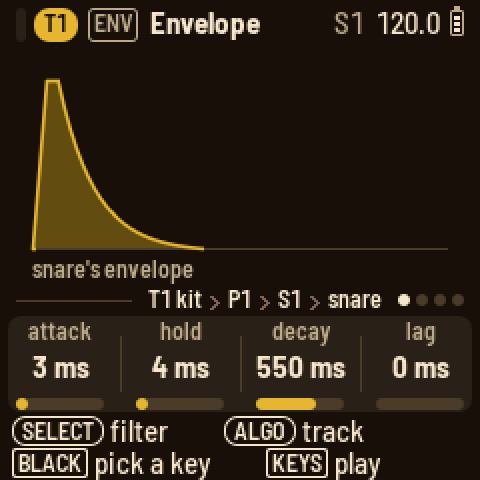
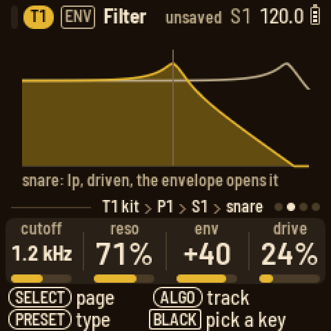
The sample model plays a sample from the bank (described below) on the key. sample picks the sample, pitch tunes it up to 24 semitones either way from its own rate, start makes it begin later, and reverse plays it from the end back to the start. It plays to the end of the sample, or for as long as the key's decay allows. Four sample keys can sound at once; a fifth takes over from the oldest.
Samples
LOOM-8 carries a bank of samples. Sixteen are its own: a 909 kick, snare, hat and clap; a noise sweep; piano, upright bass, strings, brass, flute and an orchestra hit; a vinyl loop; and four breaks for the slice engine (classic, heat, choke and ecstasy). Then come thirty-two of yours, user 1 to user 32. Both the sample model on a drum key and the sample engine on a synth track play them, and the knob shows each one's name.
Since 0.7 the four breaks are no longer built into the firmware, because they take room that new sounds need. To add them, open the samples page, press Add the breaks, then Send (or run tools/loom_samples.py load breaks). They go into your bank (92 KB of its 214) and keep their own places on the sample knob, so the slice presets and your projects find them by name. Until you add them, the breaks are silent and the picture says "install the breaks: samples page".
The sample engine plays a sample at the pitch of the note. The sample's root note plays it at its own rate; an octave up plays it twice as fast. Its knobs:
| Knob | What it does |
|---|---|
| sample | Which sample plays. An empty user slot plays nothing. |
| start | Where it begins, 0 to 99 % of the way in. |
| length | How much of the rest plays. At 100 % it plays to the end. |
| mode | one-shot (plays once, then the note ends), loop (plays round and round; a sample with its own loop loops that part), reverse (plays once, backwards), ping-pong (plays forward, then back) |
The picture shows the sample's waveform with the part that plays drawn bright, a dot where it starts, and the loop's ends marked. In loop and ping-pong modes, SELECT has one more page, Loop, right after Engine. Its loop start sets where the loop begins within the part that plays, and loop len sets how much of the rest it loops. At 0, loop len reads "auto": it uses the sample's own loop, or loops to the end. The loop point is crossfaded (8 ms), so it loops without a click wherever you set it. After that, the track's envelopes, filter, character and LFO shape the sound as they do for any engine. There are eighteen presets:
- piano (looped, with a little tape), dusty keys (darker, with the tape wobbling), piano stab (short and bright), rev piano (the piano backwards)
- upright and dusty bass (the upright bass, plucked; dusty bass is short and deep in the tape)
- strings, str stab (the section's attack, cut short) and swell (the strings backwards)
- brass and horn stab
- flute and air flute (an octave down, played as a pad)
- orch hit and dark hit (an octave down)
- vinyl (the run-out groove), riser (the noise sweep) and boom (the kick, low and long)
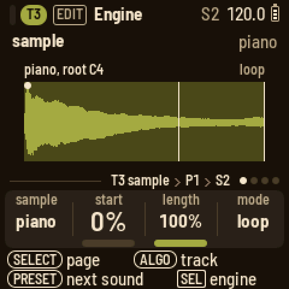
Slice
The slice engine cuts a loop (a break) into even slices and plays one slice per note. The sample's root note plays slice 1, the next note up plays slice 2, and so on, wrapping round after the last slice. With eight slices, F3 to C4 play slices 1 to 8 and C#4 plays slice 1 again. Below the root, the notes count back from the last slice. On the keys at their own octave, F3 (the lowest key) plays slice 1 of a factory break. When you write slices on the steps, you can replay the break (slice k on every other step, for eight slices over a bar) or build a new one from its pieces, in any order, with repeats and gaps. Its knobs:
| Knob | What it does |
|---|---|
| sample | Which loop: the factory break, or one of yours. |
| slices | 4, 8, 16 or 32 even slices. |
| pitch | Up to 24 semitones either way. Down, a slice plays slower and runs longer than its place; up, it plays faster and shorter. |
| gate | How much of each slice plays, all of it at 100 %. Both ends get a short fade, so a cut never clicks. |
A loop that knows how many bars long it is follows the tempo: its bars last as many bars of the song. So a factory break plays slower at a slower tempo, with each slice still on its steps, and the pitch knob works on top of that. A sample without a bar count plays at its own speed, and the picture says "own speed".
How notes overlap depends on the play mode:
- In poly mode, each note plays its slice up to its gate and overlaps the next one.
- In mono mode, a new note cuts off the playing slice (a quick fade) and starts the new slice from its beginning.
- In legato mode, a new note moves to the same position in the new slice, so the time keeps running.
After that, the envelopes, filter, character and LFO shape the sound as they do for any engine. (The presets keep the filter's key tracking at 0, so every slice sounds alike.) A slice always plays to its gate, however short the note: the gate sets the length, not the step, so slices on the steps play through just as the break did.
When you choose the slice engine from SEL, the track comes off the conductor, because its notes pick slices and a chord change would move them. Turn FOLLOWS CONDUCTOR back on if you want it.
The picture shows the loop's waveform cut at the slices. Each slice's gated part is drawn, and what the gate leaves out is faint. The playing slice is lit, with a line at the play position, and slice 1 has a dot. Above it are the loop's name and bars, and the slice count or the slice playing. There are eleven presets:
- breaks, heat, choke and ecstasy: each break in eight slices, as it was played
- jungle: classic in sixteenths, driven, each slice cutting off the last
- roller: choke in sixteenths, tight
- two step: choke in sixteenths, short, with a touch of delay
- dusty loop: ecstasy three semitones down, in the tape
- half time: classic an octave down, dark
- hits: classic's eighths one at a time, short, to play as a kit
- ghosts: classic's sixteenths, soft and short, to sit under another beat
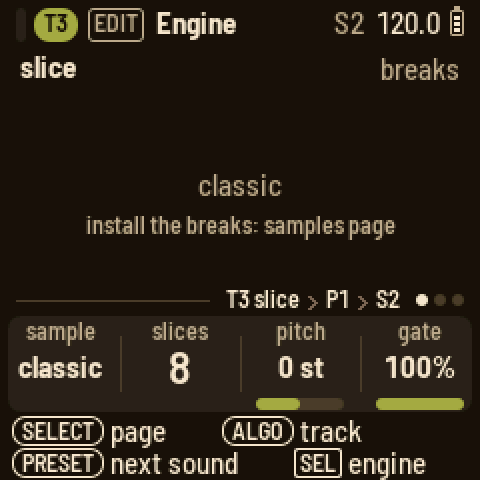
Your own samples. Connect the FM-1 (running LOOM-8) to a computer by USB and open the Samples page, <https://charlesvestal.github.io/fm1-loom/samples/>, in Chrome or Edge. Press Connect to read the samples on the FM-1. From there you can:
- add files (WAV, AIFF, MP3 or FLAC) by dropping them on the page
- replace a sample by dropping a file on it
- rename, move up or down, or remove samples
- set each sample's root note and, for a loop, its bars
Then press Send. The samples already on the FM-1 are kept exactly as they were. Quality picks the rate new samples are stored at; auto picks the best rate at which everything fits.
You can do the same from the command line, in the firmware's folder:
``sh pip install mido python-rtmidi numpy python3 tools/loom_samples.py load kick.wav snare.wav "vox=ah_A3.wav" "pad=pad.wav:57" "amen=amen.wav@1%32k" python3 tools/loom_samples.py info python3 tools/loom_samples.py erase ``
load replaces the user samples with the files you give, in that order: user 1, user 2, and so on (up to 32). Each WAV can be any rate, mono or stereo, 8 to 32 bit. The tool converts it to mono at its own sample rate and evens out its peak level.
NAME=sets the name shown on the screen (11 characters). Without it, the file's name is used.:ROOTsets the note that plays the sample at its own pitch on a synth track. Without it, the tool uses a note in the file's name (such as "ah_A3"), or C4.- A loop stored in the WAV is kept.
@BARSmarks the file as a loop of that many bars (1 to 16), for the slice engine. The loop then follows the tempo, and its root (slice 1) is F3 unless:ROOTsays otherwise. The tool prints the tempo the loop has at its own speed. Trim the loop to exactly its bars first, because the slices are even cuts of the whole file.
How much fits. The bank holds 214 KB of sound. Each sample keeps its own rate, and a lower rate fits more:
| rate | keeps sound up to | fits in all |
|---|---|---|
32000 Hz (%32k) | 16 kHz: bright drums and loops | 12 seconds |
22050 Hz (%22k) | 11 kHz: most sounds | 17.7 seconds |
16000 Hz (%16k) | 8 kHz: bass, pads, voices | 24 seconds |
11025 Hz (%11k) | 5.5 kHz: lo-fi, sub bass | 35 seconds |
Put %RATE after a file to set its rate, or --rate RATE right after load to set the rate for the rest. Otherwise the tool picks the highest of 22050, 16000 and 11025 Hz at which everything fits. It prints each sample's rate, length and size, and the seconds left at each rate. (A bar at 120 BPM is two seconds, so eight one-bar breaks fit at 22050 Hz.) A sample plays at its own pitch whatever its rate, and a loop with @BARS keeps the tempo. A higher rate only costs room, plus a little more of the FM-1's time while it plays. One sample can be up to about 16 seconds long at 22050 Hz.
The sound stops while the FM-1 writes the samples (longer for a fuller bank). When the screen says LOADED, the FM-1 has checked every byte. A track that was playing a sample keeps pointing at the same slot: user 2 is still user 2, whatever is in it now.
The synth pages
On the Engine page, turn SELECT for the Play page: poly, mono or legato, portamento, the bend range (off, 1 to 7 semitones, or an octave) and the track's volume. Turn it again for Play 2, which sets the sound's octave, from two down to two up (bass presets come an octave or two down). This moves the notes the track plays, the steps included. On knit and rayon, turn once more for Sub.
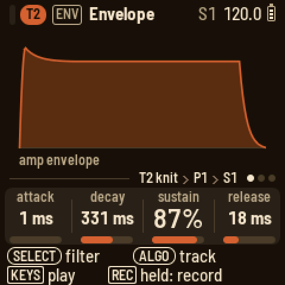
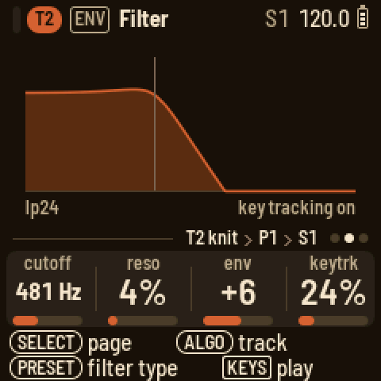
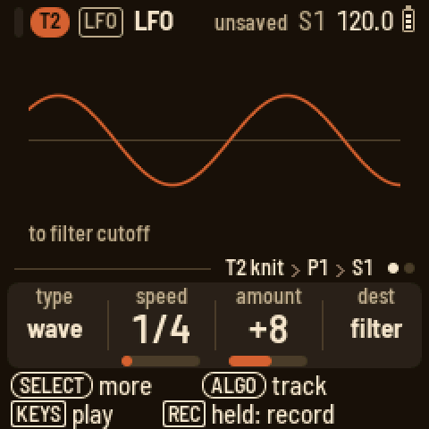
ENV has the amp envelope first. Next comes the filter: cutoff in Hz, resonance, envelope amount and key tracking, with PRESETS turning the type (lp24, ladder, lp12, hp12, bp12, off). Last is the filter's envelope. FX has the track's character (below), then its sends to FX I and FX II, its pan and its level, then the two effects. LFO has the type and its first three knobs on page 1, and its fourth and fifth on page 2. When you pick a new type, it starts from its own defaults:
| Type | Page 1 | Page 2 |
|---|---|---|
| wave | speed, amount, destination | parameter, shape |
| drift | speed, amount, destination | parameter, envelope |
| wobble | speed, vibrato, volume | envelope, shape |
| pump | source, amount, hold | release |
Turned left, the speed knob is synced, from 2/1 to 1/64; turned right, it runs free in Hz. The destination is a module, and the parameter is one of that module's four:
- synth: the engine's four knobs
- envelope: attack, decay, sustain, release
- filter: cutoff, resonance, envelope, key tracking
- voice: volume, pitch, pan, character
A destination marked "free" keeps running instead of restarting on each note.
Character
Every voice of a synth track has its own effect after the filter and before the sends: its character. Each voice is shaped separately, so a chord driven hard stays a chord. Press FX to open the Character page. It shows the type, what it does, and a picture of it: either the curve a sample goes through, or what it does to a wave. The faint line is the sound without it. PRESETS turns the type. The knobs are type, amount, tone and mix (dry to wet); at mix 0 the character is off. Each factory preset has its own character, so a preset is a whole sound.
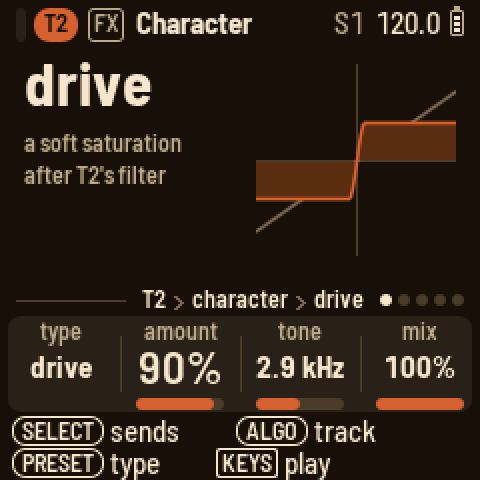
| Type | Amount | Tone |
|---|---|---|
| off | ||
| drive | How hard it saturates (the level stays the same). | A low-pass after it, 400 Hz to 20 kHz. |
| fold | How far the wave folds over (the level stays the same). | The bias: away from the middle, it folds one side more. |
| crush | How far it drops. | What drops: left the sample rate, right the bits, the middle both. |
| ring | How deep the ring modulation goes. | The ratio of the ring's sine to the note, 0.25:1 to 7:1. |
| tilt | The pivot, 150 Hz to 6 kHz. | The tilt: left darker, right brighter, 6 dB each side at the ends. |
| tape | Worn tape: saturation, plus a pitch wow that deepens with it. | The top-end roll-off, 1.5 to 18 kHz. |
| sampler | An old sampler's grain: a lower rate and fewer bits. | Its output filter, 2 to 20 kHz. |
You can lock the amount, tone or mix on a step like any knob: hold the step and press FX. The LFO can reach the amount through the voice module's fourth knob, "character". On a kit, the character belongs to the whole kit and comes after its bus filter (the keys' sends are taken before it). A kit's ring uses a ratio of C4, and its tape has no wow.
Players
Press ARP. KNOB 1 picks the player: off, arp, strum or hold.
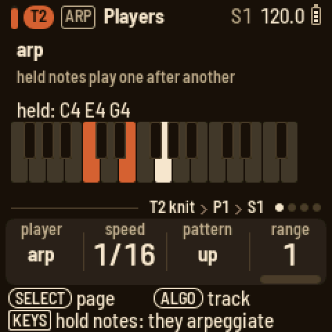
- arp plays the held notes one after another. Page 1 has the speed (1/4 to 1/64, with triplets), the pattern (up, down, up down 1, up down 2, as played, random) and the range. Page 2 has the note length, a style, glide and stereo. Page 3 is hold.
- strum plays a chord from one key, built on that key in the conductor's key and scale. At first it plays a triad, so the white keys in C major give C, Dm, Em, F, G, Am and Bdim (the harmonic field). Hold up to eight keys together and they become the chord (you hear them as you hold them). From then on, one key plays that chord moved along the scale: a C7 gives Dm7 on D and G7 on G, and a note outside the scale stays where it is. A key outside the scale plays the chord exactly as you held it, moved to that key. Roll strums the chord, up to one note per step.
- hold keeps the notes you play until you play the next ones.
The arp and the strum play the track's steps too. A step's notes are arpeggiated for as long as the step lasts (give it a longer LENGTH for more notes), together with any keys you hold. A step with a chord is strummed in the strum's direction and roll, and every note ends with the step. A step with one note strums the strum's chord from that note, just as a key does. When you change the player, or turn its hold off with no key down, it lets go of whatever it was holding.
Arrange, scenes and the song
Press HOME. Each row is a track, showing its pattern and a playhead, with a small meter at the left of what it plays (for COND and THROW, the meter lights while one of their steps plays). Muted tracks are dimmed. The scene number is at the right. When a scene is cued, the next scene's number appears beside it with the beats until it starts, and its key blinks.
The 16 white keys are scenes 1 to 16. Press OCT+ to put scenes 17 to 32 on them, and OCT− to go back. The dots at the right show all 32 scenes, with a mark beside the rows the keys hold now, and the keys follow the scene playing.
- When stopped, pressing a scene key switches at once.
- When playing, the scene starts at the next bar line. Press its key again to switch at once, or press the playing scene's key to cancel the cue.
- Set SEL's SCENES SWITCH to "pattern end" to make a key wait for the end of T1's pattern instead. The tracks can have different lengths and drift apart, so T1's pattern sets the scene's length (up to four bars on a 64-step T1).
- Turning PRESETS cues the next scene for the next bar in the same way.
- Pressing an empty scene's key turns it into a copy of the scene playing.
- Hold a white key for a second to clear that scene. The playing scene keeps going while LOOM-8 asks you to confirm. Holding an empty scene's key does nothing.
The black keys mute. Keys 1 to 8 mute the tracks, 9 the conductor and 10 the throws. A kit track's black key mutes it when you let go. Hold it instead and press white keys 1 to 11 to mute that kit's sounds one by one (lit means playing), in this scene. Each kit has its own sound mutes, for the first four kit tracks, and the row shows how many are off. A muted sound still drives the pump, and its key still plays when you press it. To change scenes from any page, hold HOME and turn PRESETS.
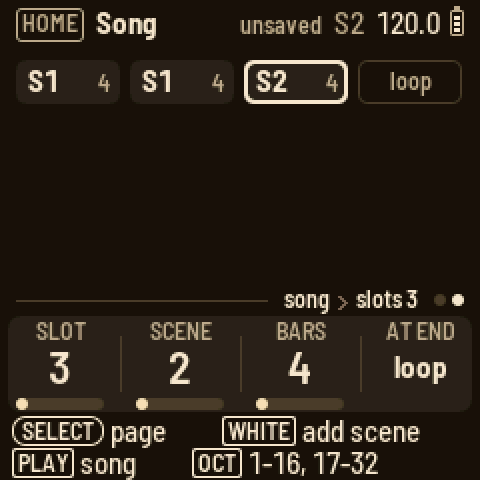
The knobs on Arrange:
- KNOB 1 sets the tempo (hold HOME for tenths).
- KNOB 2 sets the groove type: swing, lilt, weave, stretch, drunk, jitter, accent, lazy, push pull, sway or swell.
- KNOB 3 sets the selected track's groove amount, from −99 to 99.
- KNOB 4 sets the selected track's pattern in this scene ("T2 PAT"). ALGORITHM picks the track, and while playing, the new pattern comes in at the track's next bar line. This lets you set a scene's patterns, track by track, without leaving Arrange.
The click is on REC's knobs.
Turn SELECT for the Song page. Press a white key to add that scene after the selected slot (press OCT+ for scenes 17 to 32). The knobs move to the new slot, which plays as many bars as the one before it (the first slot plays four).
- KNOB 1 picks the slot.
- KNOB 2 changes its scene.
- KNOB 3 sets how many bars it plays, 1 to 64. A bar is always 16 sixteenths, whatever the patterns' lengths, so a 64-step pattern takes four bars.
- KNOB 4 sets whether the song loops or stops at the end.
Press PLAY on the Song page to play the song from the selected slot; SEL's PLAY SONG plays it from the top. As the song plays, a bar along the bottom of the playing slot fills up over its bars. SEL can also insert the scene playing, delete a slot or clear the song.
The aux tracks
Turn ALGORITHM past T8. Each aux track has its own page under EDIT and its own steps under SEQ.
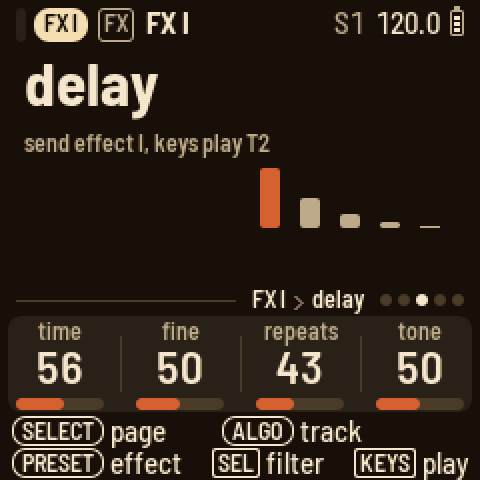
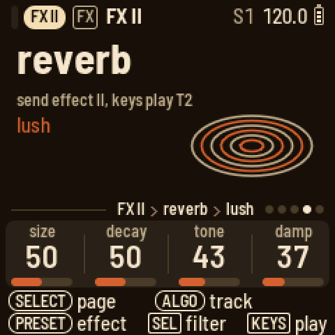
- COND (the conductor) has key, scale and link (an instrument track that also plays the conductor's keys). Play a chord on its keys and the tracks that follow move to it. Its steps hold the chords you played: press SEQ and a white key. Set the track scale to 4 so each step is a beat, or to 16 for a bar. Page 2 is the routing: black keys 1 to 8 toggle a track. Its SEL list sets how each track follows, diatonic or transpose only. Drum tracks never follow.
Page 3, Follow, takes the chords from a track instead. Press that track's black key (press it again to turn it off), or turn KNOB 1. Each note the track plays sets the chord (its lowest note on a step, or the lowest of the keys held), so a chord part or a bass line can lead the others. The note's place in the scale counts, not its octave, and the other tracks move the nearer way: in C major, a G takes them down a fourth and an F takes them up a fourth. The leading track plays as written and follows nothing, and it still leads when muted. While a track leads, the conductor's own steps rest, but its keys still change the chord until the leading track's next note. A kit has no notes, so it can't lead.
- WEAVE (the weaves): hold its white keys 1 to 10 to weave T1 to T8, COND and THROW. With latch, a tap turns a weave on and another tap turns it off. Each track weaves as its ARP's Weave page sets it, and REC records the weaves onto the WEAVE steps. See Weave, above.
- THROW (the throws): the keys fire the throws, on the drum tracks from the lower octave and on the melodic tracks from the upper one. Slice tracks count as drums. Their fills play the pattern's own slices: the slice on the downbeat acts as the kick, the one on the backbeat as the snare, and an off-beat one as the hat. Octave takes them up. A step writes the last throw you played. KNOB 1 is latch: with it on, a key toggles its effect.
| Key of the octave | Effect |
|---|---|
| white 1 | mute: silences the group |
| white 2 | stutter: a fast loop from where the throw starts |
| white 3 | repeat: a slow loop |
| white 4 | echo: the loop repeats and fades |
| white 5 | build: a fill that builds |
| white 6 | floor: four on the floor |
| white 7 | jumble: a random fill |
| black 1 | warble: high-passed drums, vibrato on melodic notes |
| black 2 | pan: the sounds move across the field |
| black 3 | octave: drums an octave up, melodic tracks an octave down |
| black 4 | chop: short notes |
| black 5 | ring: long notes |
When you let go of a loop throw (stutter, repeat, echo), the track comes back in time, at the step it would have reached if it had never looped. Set LOOP THROWS to "drift" in GLO's SEL list and the track stays where the loop left it instead, out of step with the others until a scene or the transport sets it straight.
You can also throw from any track: the last page of FX, Throws, has the same keys and the latch.
- FX I and FX II are a send effect each: chorus, delay, lofi, phaser or reverb, each with four knobs. To reach them from any track, press FX and turn SELECT. PRESETS picks the effect. SEL has its high-pass and low-pass and, on FX I, the send into FX II. In a new project the high-passes keep the lows dry: the echoes start at about 130 Hz and the reverb at about 230 Hz. The keys play the track you were on. If you turn to FX I or FX II with ALGORITHM, EDIT has the same knobs.
| Effect | Knobs |
|---|---|
| chorus | rate, depth, feedback, width |
| delay | time, fine, repeats, tone (how bright the repeats are) |
| lofi | rate, bits, smooth, width |
| phaser | freq, depth, rate, feedback |
| reverb, plate | size, motion, tone, damp (how fast the tail darkens) |
| reverb, the other modes (lush too) | size, decay, tone, damp |
The effects return only the sound they make. The track's own sound stays on the track.
The reverb has eleven modes, and PRESETS steps through them after the phaser. plate is LOOM-8's own. Nine come from the PlayStation's sound chip, the reverbs its games used: room, studio S, studio M, studio L (small, medium, large), hall, half echo, space echo, chaos echo (it almost never stops) and one echo (a single repeat). lush is a smooth, wide plate based on Jon Dattorro's, and a new project starts with it.
The console modes keep their grain: they run at half the sample rate, as lush does. On these, size stretches their delays, from small and metallic at 0 to the console's own at the top, which is where a newly chosen mode starts. decay sets how long the tail lasts, with the console's own in the middle. tone darkens the tail below the middle and thins it above. damp softens the reflections. Changing the mode empties the reverb for a moment. On lush, size also lengthens the gap before the tail, and damp darkens the tail as it fades. Only FX II has the reverb. FX I has the delay's memory in its place.
Mix and master
Press GLO. The Mix page shows a meter for each track. Each black key picks its track: tap it to mute or unmute the track, or hold it to solo the track until you let go. Hold several to solo them together. Each one you let go leaves the solo, and letting go of the last one brings the mutes back as they were. The knobs are the sends to FX I and FX II, the pan and the level. A drum track's sends are set per key, on FX, Sends.
Turn SELECT for more pages:
- Master EQ: low, mid and high (64 is flat).
- Master color (see below).
- Master out: the drums' level, the melodic tracks' level, the compressor and the pump. Its SEL list has what the pump follows, its release and accent, and the output level.
On Setup, the knobs are the lights, sending MIDI clock, sending MIDI notes (on in a new project) and the theme (tape deck, blueprint or b/w). The page also shows where the tempo comes from (LOOM-8, or a MIDI clock coming in), the USB audio level, the autosave and the version. GLO's SEL list sets the USB audio level, LOOP THROWS, AUTOSAVE, CC OUT and SCENES OUT. On every page, the header shows the scene playing ("S3") before the tempo. You'll find the projects on HOME's SEL list and the count-in on REC's knobs.
LFO (after Master out) is the shared LFO. The project has one, and it moves the tracks you give it, so a single sweep can open the filters of a few tracks together, or breathe across a 16-bar section of a one-bar loop.
- KNOB 1: the shape (off, sine, triangle, saw up, saw down, square, random).
- KNOB 2: the rate, from 16 bars to a sixteenth in time with the tempo, or 0.02 to 10 Hz free.
- KNOB 3: how much, in either direction.
- KNOB 4: what it moves: cutoff, resonance, pitch (up to 12 semitones), pan, volume, the FX I or FX II send, or the character's amount.
Black keys 1 to 8 pick the tracks it moves (they light up). The LFO restarts from its beginning when PLAY starts, so a long sweep lines up with the bars. On a kit it moves every sound, or just one: white keys 1 to 11 pick the sound (a hat's pitch, the snare's send), and white key 12 goes back to every sound. The character's amount is the whole kit's.
Master color gives the whole mix a colour after the EQ. color picks it, and amount, tone and mix shape it.
- tape is worn tape: a slow wow and a quick flutter on the pitch (more as you raise the amount), soft saturation and a gentle roll-off of the top (tone sets where it starts, 1.5 to 18 kHz).
- sampler is an old sampler's grain: the mix held at a lower rate and fewer bits (amount goes from 26 kHz and 14 bits down to 11 kHz and 11 bits), then its filter (tone).
- off (the setting in a new project) leaves the mix as it is.
Each synth track's Character page has the same two, for one sound.
Pump (Master out's fourth knob) lowers the mix each time the kick plays, by up to 24 dB, and lets it swell back up: the big-beat breathing of house and French touch. When a kit drives it (its kick, or a kit track), it lowers the melodic tracks and leaves the drums alone, so the kick that drives it keeps its punch. When a melodic track or the metronome drives it, it lowers everything. Accented kicks pump harder. The pump works even with comp at 0, and even when the kick is muted, so a silent kick can drive it: write a kick on a track, mute it, and the mix breathes to a beat nobody hears. At 0 (where a new project starts) it is off. Its SEL list has:
- pump by: what drives it. kick is any kick of a kit (black key 1, or any key with the kick model). T1 to T8 is that track: a kit's kicks (so one kit's kick drives it and another's doesn't), or any note of a melodic track (a bass, a chord, a muted ghost track). metronome is the click, on every beat while it sounds.
- release: how fast the mix swells back, from 10 ms to 1.5 s (107 ms to start with). Long releases breathe across the beat; short ones only nick the kick's tail.
- accent: when on, each hit pumps by its velocity (a soft hit about half as deep as a full one). When off, every hit pumps fully.
- level: the output level, which is the drive into the limiter (100 is unity).
This pump works on the whole mix. A track's own pump LFO (above) still ducks just that track, for a bass that gets out of the kick's way while the rest plays on.
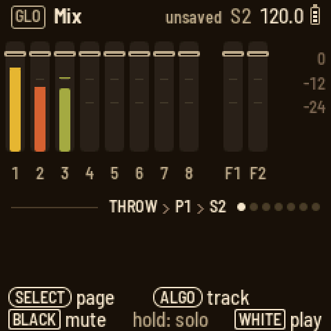
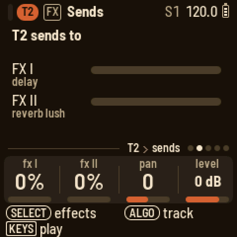
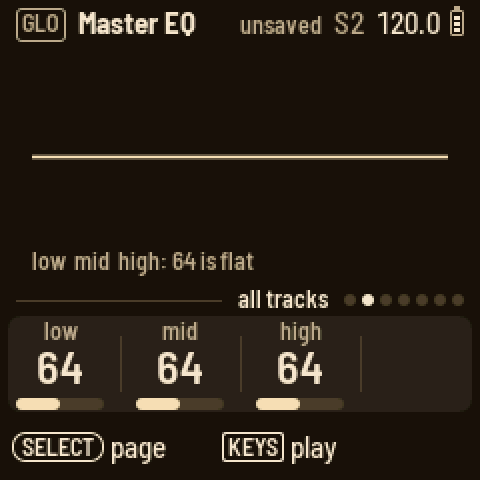
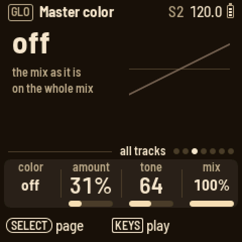
MIDI
Over USB, each track has its own channel: T1 to T8 on channels 1 to 8, FX I on 9, FX II on 10, and the master and the scenes on 11. Notes on channels 12 to 16 play whichever instrument track is selected (if the conductor or throws track is selected, the last instrument track you had). LOOM-8 never sends on 12 to 16. Notes on 9 and 10 do nothing.
Each track's SEL list on its sound pages has MIDI OUT. With it on, the track's notes go out on its own channel, as long as Setup's NOTES is on too. MIDI OUT is on in a new project, and a project from an older version that had a MIDI channel number set opens with MIDI OUT on.
Notes that come in play the track (and record), but LOOM-8 doesn't send them back out, and it doesn't send the arp or strum they start either, so a DAW that sends them back doesn't cause a loop. The keys you play on LOOM-8 and the sequencer's notes do go out. A track's arp, strum or hold follows the last key that played it: if a note from your DAW joins an arp you're holding on LOOM-8, the arp stays off MIDI out until you play a key on LOOM-8 again.
A CC moves the matching knob or switch, scaled to its range. On channels 12 to 16, it moves the selected instrument track's knob or switch.
| CC | Synth track | Kit track |
|---|---|---|
| 7 | level | level |
| 10 | pan | pan |
| 91 / 93 | send I / send II | every sound's send I / II, moved by the same amount |
| 9 | mute (64 and up: muted) | mute |
| 74 | cutoff | the bus's hi cut |
| 71 | resonance | the bus's low cut |
| 73 | attack | kit attack |
| 72 | release | kit length |
| 75 | decay | - |
| 5 | glide | - |
| 1 | LFO amount | - |
| 16-26 | - | mute sound 1-11 (64 and up: muted) |
| 80-90 | - | pan of sound 1-11 |
| 102-112 | - | level of sound 1-11 |
| CC | FX I / FX II | Master |
|---|---|---|
| 7 | return level | level |
| 16-19 | the effect's four knobs | EQ low / mid / high |
| 20-23 | - | color type / amount / tone / mix |
| 24-27 | - | drums level / melodic level / comp / pump |
| 28 | - | pump release |
| 74 / 75 | low-pass / high-pass | - |
| 93 | feed into FX II (channel 9 only) | - |
A mute (CC 9, or 16 to 26 on a kit) works like the mute on the Mix page and is saved into the scene playing. The mutes for a kit's sounds work on the first four kit tracks, as on Arrange. While you record (REC held during playback, or kept on with REC and PLAY), a CC on a track's parameter records into that track's own automation.
To pick scenes 1 to 32 over MIDI, send Program Change 0 to 31 on channel 11, or notes 36 to 67 (C1 up) on that channel. This works like Arrange's white keys, and SCENES SWITCH decides when the change happens.
CC OUT is in GLO's SEL list and is on in a new project. With it on, turning a mapped knob or SEL row by hand sends its CC on its channel, if the track's MIDI OUT is on (FX and the master always send). LOOM-8 never sends back what comes in, and it never sends locks, automation, presets or a kit's 91 / 93 (each sound's own send is a separate parameter, and unmapped).
SCENES OUT comes after CC OUT in GLO's SEL list and is off in a new project. With it on, changing the scene on LOOM-8, or by loading a project, sends that scene's Program Change on channel 11. A scene change that came in over MIDI isn't sent back.
Saving
At power-on, LOOM-8 opens the project you saved or loaded last. It saves by itself three seconds after your last change, once it is stopped and silent, because writing to the flash would cut the sound. Until then the header says "unsaved" and SAVE lights. Press SAVE to save at once.
To save to another slot, hold SAVE and press white key 1 to 3, or use SAVE TO on HOME's SEL list and turn ALGORITHM to the slot. LOOM-8 asks first if the slot holds another project. NEW PROJECT starts in the first empty slot. If all three are taken, it has no slot and waits for SAVE TO before it saves. To save only when you press SAVE, set AUTOSAVE to off in GLO's SEL list (Setup shows it). A new project keeps that choice.
A new project starts with a band picked at random from the factory presets: the kit on T1, then on T2 to T8 a bass (mono), a polyphonic synth, a pad, a mono lead, keys, an effect and a pluck or bell, with every track following the conductor. RANDOMIZE PRESETS on HOME's SEL list picks another band for T2 to T8 (it asks first) and keeps the patterns, the kit and the mix. A project saves every knob as you left it, not the preset it came from.
Projects have no names. A project is its slot: LOAD PROJECT and SAVE TO show Proj 1, Proj 2 and Proj 3, and mark which are empty and which is open.
Older projects. Projects saved by 0.5-beta to 0.5.4-beta load and are converted: their scenes go into the thirty-two, MIDI notes are switched on, and T1 to T8 go on channels 1 to 8. Projects saved by this version don't open in older ones.
Backup. To keep the three projects, the user presets and kits, and your samples on a computer, and put them back later, open <https://charlesvestal.github.io/fm1-loom/backup/> in Chrome or Edge with the FM-1 connected by USB. A backup holds the projects as they were last saved, so save anything you want in it first. Putting a backup back replaces all three projects and the presets. LOOM-8 asks first, on its screen (SEL yes, HOME no), and only while stopped. Once you say yes, the page sends the samples too. This takes about 20 seconds, and the sound stops while they are written. A backup made before the page kept samples leaves your samples as they are. From a terminal, in the firmware's folder:
- projects and presets:
python3 base/tools/fm1_backup.py backup FILE --magic LM8Bandrestore FILE - samples:
python3 tools/loom_samples.py backup FILEandrestore FILE(itsrestorealso takes the backup page's file)
On a sound page, hold SAVE and press white key 1 to 16 to keep the track's sound as that user preset.
Page by page
| Button | Page | KNOB 1 | KNOB 2 | KNOB 3 | KNOB 4 | Keys |
|---|---|---|---|---|---|---|
| HOME | Arrange | tempo | groove | amount | the track's pattern | white: scenes (OCT: 17 to 32), black: mutes (hold a kit's: white 1-11 are its sounds); SEL: load, save to, new project, randomize presets, the song, when scenes switch |
| HOME, SELECT | Song | slot | scene | bars | at end | white: add a scene (OCT: 17 to 32) |
| SEQ | Steps | pattern | length | scale | groove | white: steps, black: sound (drums); SEQ held: a keyboard |
| SEQ, a step held | Steps | velocity | length | chance | pitch | white: length, black: sounds |
| SEQ, a step held + ARP | Steps | trick 1 | its value | trick 2 | its value | |
| SEQ, SELECT | Bar | quant | note | groove | shape | black: scale; SEQ held, black 1-4: jump or loop bars |
| EDIT | Engine | the engine's four | play | |||
| EDIT, SELECT | Play | mode | porta | bend | volume | play |
| EDIT, SELECT twice | Play 2 | octave | play | |||
| EDIT, SELECT 3 times (knit) | Sub | osc 2 | level | sub | noise | play |
| EDIT, SELECT 3 times (rayon) | Sub | fall | floor | keyscale | play | |
| EDIT, SELECT (sample, loop modes) | Loop | loop start | loop len | play | ||
| EDIT, drum track | Engine, Key, Sends | the key's knobs; model, random, pan, volume; its fx I, fx II | black: the key | |||
| ENV | Envelope | attack | decay | sustain | release | play |
| ENV, SELECT | Filter | cutoff | reso | env | keytrack | play; PRESETS: the type |
| ENV, SELECT twice | Filter env | attack | decay | sustain | release | play |
| ENV, drum track | Envelope | the key's attack | hold | decay | lag | black: the key |
| ENV, drum track, SELECT | Filter | the key's cutoff | reso | env | drive | black: the key; PRESETS: the type |
| ENV, drum track, SELECT twice | Kit env | lag | attack | random | length | play |
| ENV, drum track, SELECT 3 times | Kit filter | low cut | comp | drive | hi cut | play; PRESETS: on or off |
| FX | Character | type | amount | tone | mix | play; PRESETS: the type |
| FX, SELECT | Sends | fx I | fx II | pan | level | play |
| FX, SELECT twice | FX I, FX II | the effect's four | play; PRESETS: the effect (and the reverb's mode) | |||
| FX, SELECT four times | Throws | latch | low: drum throws, high: melodic throws | |||
| LFO | LFO | type | the type's three | play | ||
| LFO, SELECT | LFO 2 | the type's fourth and fifth | play | |||
| ARP | Players | player | its first | its second | its third | play, through the player |
| ARP, SELECT | Players 2, Hold | the arp's length, style, glide, stereo; hold | play | |||
| ARP, SELECT (last) | Weave | with | pattern | rule | plays | black: the track woven in, white: its pattern; SEL: KEEP AS PATTERN |
| GLO | Mix | FX I | FX II | pan | level | black: tap to mute, hold to solo (several together) |
| GLO, SELECT | Master EQ | low | mid | high | ||
| GLO, SELECT | Master color | color | amount | tone | mix | |
| GLO, SELECT | Master out | drums | melodic | comp | pump | SEL: pump by, release, accent, level |
| GLO, SELECT | LFO | shape | rate | amount | dest | black: the tracks it moves; white 1-11: a kit's sound, 12 all |
| GLO, SELECT | Setup | lights | clock | notes | theme | SEL: USB audio, loop throws, autosave, CC out, scenes out |
The aux tracks' EDIT pages:
- COND has key, scale and link. Page 2 is the routing (black keys toggle a track), and page 3 is Follow (KNOB 1, or a black key, picks the track the chords come from).
- THROW has latch.
- WEAVE has latch.
- FX I and FX II have the effect's four knobs, and on page 2 hp, lp and the send to FX II.
Screen reader
Connect the FM-1 by USB and open https://charlesvestal.github.io/fm1-reader/ in Chrome or Edge. LOOM-8 says each page, knob value, step, scene and message as it changes, and the whole screen when you ask. The words it uses are published with this site, so every version reads its own screen correctly.
Credits
LOOM-8's way of working owes a great deal to teenage engineering's OP-XY; LOOM-8 is not affiliated with teenage engineering. Built on fm1-base and felucca-bsp, from Felucca by Leo Kuroshita (Hügelton Instruments), with Polly's menus and X0X's sequencer discipline. Cane and voile are Mutable Instruments Braids by Émilie Gillet (MIT); the reverb's PlayStation modes are PSXVerb's. The factory breaks are free loops by u/FCTRYBEATS, the 909 drums are renders of 9W9, and the recorded instruments come from the Versilian Studios Chamber Orchestra 2 Community Edition (CC0).